## **deadlock** ## **operating systems** ### csci 3411 ### Prof. **Sibin Mohan** <br> _<font size="5"> acknowledgments: some content modified from Silberschatz et al. and West</font>_ --- so far we've seen... --- ||| | --- | --- | | **race conditions** | → critical sections | --- ||| | --- | --- | | **race conditions** | → critical sections | | **locks**, **condition variables** | → easier abstractions | --- ||| | --- | --- | | **race conditions** | → critical sections | | **locks**, **condition variables** | → easier abstractions | | **fine-grained** locking | → more parallelism... more **danger** | || --- today → yet another way synchronization goes **wrong**! --- ## deadlock --- - a set of **blocked** processes, each - **holds** a resource <br> [critical section, device, memory] - **waits** to acquire a resource held by **another** process in the set --- a set of **blocked** processes, each **holds** a resource and **waits** for another's - **starvation** on **all** associated resources --- a set of **blocked** processes, each **holds** a resource and **waits** for another's - **starvation** on **all** associated resources - result → lots of threads, **<font color="darkred">zero progress</font>**! --- ### two threads, two locks <div class="multicolumn" style="display: grid; grid-template-columns: 40% 60%; gap: 20px; align-items: center;"> <div> <p>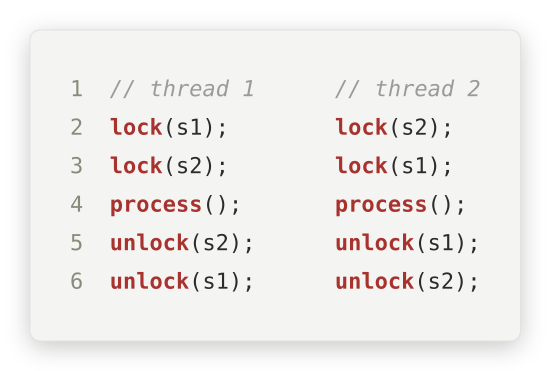</p> </div> <div> ||| | --- | --- | | thread 1 | <scb>s1</scb> then <scb>s2</scb> | | thread 2 | <scb>s2</scb> then <scb>s1</scb> | | run **concurrently** | what can go wrong? | || </div> </div> --- ### two threads, two locks <p>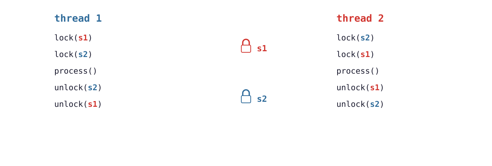</p> --- ### two threads, two locks <scb>T1</scb> takes <scb>s1</scb>, <scb>T2</scb> takes <scb>s2</scb> <p>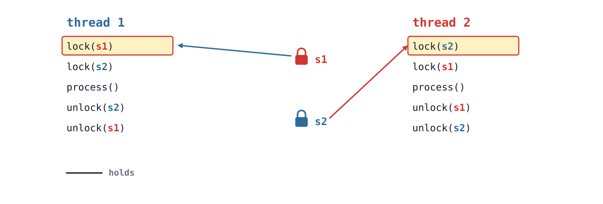</p> --- ### two threads, two locks each now waits for the lock the **other** holds <p>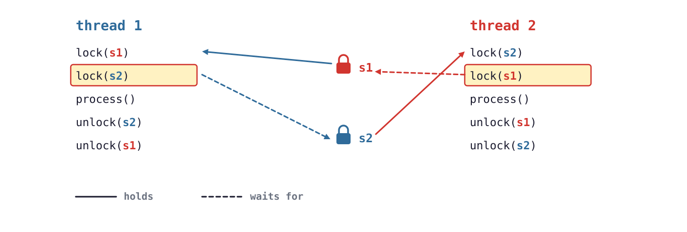</p> --- ### two threads, two locks ## **deadlock!** --- let's look at a `code` example using <scb>pthreads</scb> (Linux) --- ```C #include <pthread.h> #include <stdio.h> #include <unistd.h> pthread_mutex_t s1 = PTHREAD_MUTEX_INITIALIZER; // "red" lock pthread_mutex_t s2 = PTHREAD_MUTEX_INITIALIZER; // "blue" lock void *thread1(void *arg) { pthread_mutex_lock(&s1); usleep(1000); // widen the window: let thread 2 run pthread_mutex_lock(&s2); // waits for thread 2... printf("thread 1: processing\n"); pthread_mutex_unlock(&s2); pthread_mutex_unlock(&s1); return NULL; } void *thread2(void *arg) { pthread_mutex_lock(&s2); // opposite order! usleep(1000); pthread_mutex_lock(&s1); // waits for thread 1... printf("thread 2: processing\n"); pthread_mutex_unlock(&s1); pthread_mutex_unlock(&s2); return NULL; } int main(void) { pthread_t t1, t2; pthread_create(&t1, NULL, thread1, NULL); pthread_create(&t2, NULL, thread2, NULL); pthread_join(t1, NULL); pthread_join(t2, NULL); printf("done\n"); return 0; } ``` --- ```C [5-6|8-9|10|11|18-19|21|32-34] #include <pthread.h> #include <stdio.h> #include <unistd.h> pthread_mutex_t s1 = PTHREAD_MUTEX_INITIALIZER; // "red" lock pthread_mutex_t s2 = PTHREAD_MUTEX_INITIALIZER; // "blue" lock void *thread1(void *arg) { pthread_mutex_lock(&s1); usleep(1000); // widen the window: let thread 2 run pthread_mutex_lock(&s2); // waits for thread 2... printf("thread 1: processing\n"); pthread_mutex_unlock(&s2); pthread_mutex_unlock(&s1); return NULL; } void *thread2(void *arg) { pthread_mutex_lock(&s2); // opposite order! usleep(1000); pthread_mutex_lock(&s1); // waits for thread 1... printf("thread 2: processing\n"); pthread_mutex_unlock(&s1); pthread_mutex_unlock(&s2); return NULL; } int main(void) { pthread_t t1, t2; pthread_create(&t1, NULL, thread1, NULL); pthread_create(&t2, NULL, thread2, NULL); pthread_join(t1, NULL); pthread_join(t2, NULL); printf("done\n"); return 0; } ``` --- ```C #include <pthread.h> #include <stdio.h> #include <unistd.h> pthread_mutex_t s1 = PTHREAD_MUTEX_INITIALIZER; // "red" lock pthread_mutex_t s2 = PTHREAD_MUTEX_INITIALIZER; // "blue" lock void *thread1(void *arg) { pthread_mutex_lock(&s1); usleep(1000); // widen the window: let thread 2 run pthread_mutex_lock(&s2); // waits for thread 2... printf("thread 1: processing\n"); pthread_mutex_unlock(&s2); pthread_mutex_unlock(&s1); return NULL; } void *thread2(void *arg) { pthread_mutex_lock(&s2); // opposite order! usleep(1000); pthread_mutex_lock(&s1); // waits for thread 1... printf("thread 2: processing\n"); pthread_mutex_unlock(&s1); pthread_mutex_unlock(&s2); return NULL; } int main(void) { pthread_t t1, t2; pthread_create(&t1, NULL, thread1, NULL); pthread_create(&t2, NULL, thread2, NULL); pthread_join(t1, NULL); pthread_join(t2, NULL); printf("done\n"); return 0; } ``` --- what does it print? --- ### deadlock | **output** ``` $ gcc -pthread -o deadlock_demo deadlock_demo.c $ timeout 3 ./deadlock_demo $ echo $? 124 ``` **nothing**! killed by <scb>timeout</scb> after <scb>3</scb> s → exit status <scb>124</scb> Note: - actual runs: 3 of 3 hung. usleep(1000) widens the window; without it the deadlock is rarer, not impossible. --- ## deadlock | **doubly linked list** --- ### doubly linked list | **why?** - <scb>O(1)</scb> removal → **doubly** linked lists --- ### doubly linked list | **why?** - <scb>O(1)</scb> removal → **doubly** linked lists - one object on **many** lists <br> [hash chain, LRU list, run/wait queues...] --- ### doubly linked list | **why?** - <scb>O(1)</scb> removal → **doubly** linked lists - one object on **many** lists <br> [hash chain, LRU list, run/wait queues...] - remove a node → fix **prev** and **next** pointers --- ### doubly linked list | **removal** | thread | removes | takes locks | |---|---|---| | <scb>T1</scb> [**<font color="blue">blue</font>**] | <scb>B</scb> | <scb>B</scb> → <scb>A</scb> (prev) → <scb>C</scb> (next) | --- ### doubly linked list | **removal** | thread | removes | takes locks | |---|---|---| | <scb>T1</scb> [**<font color="blue">blue</font>**] | <scb>B</scb> | <scb>B</scb> → <scb>A</scb> (prev) → <scb>C</scb> (next) | | <scb>T2</scb> [**<font color="red">red</font>**] | <scb>C</scb> | <scb>C</scb> → <scb>B</scb> (prev) → <scb>D</scb> (next) | || --- ### doubly linked list | **removal** 1. adjacent nodes, one lock each <p>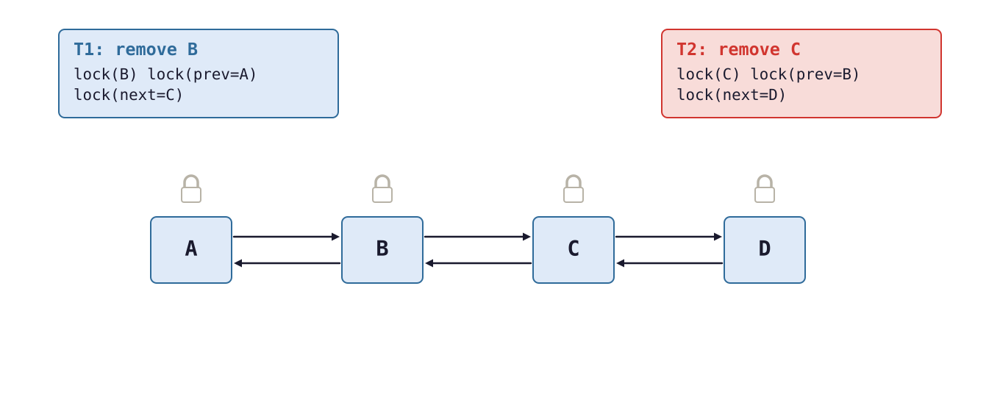</p> --- ### doubly linked list | **removal** 2. each thread locks its **own** node --- ### doubly linked list | **removal** 3. <scb>T1</scb> locks <scb>A</scb>... then **blocks** on <scb>C</scb> <p>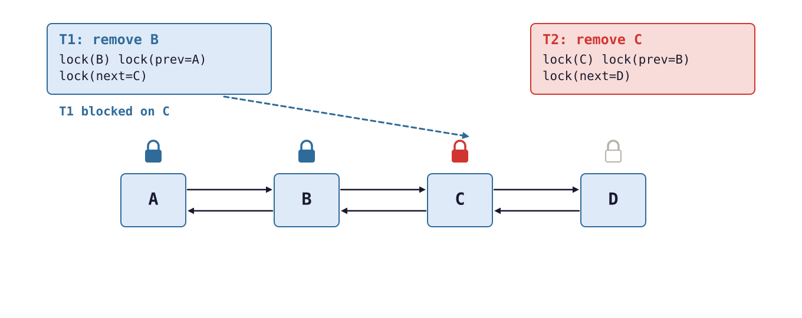</p> --- ### doubly linked list | **removal** 4. <scb>T2</scb> **blocks** on <scb>B</scb> → deadlock! <p>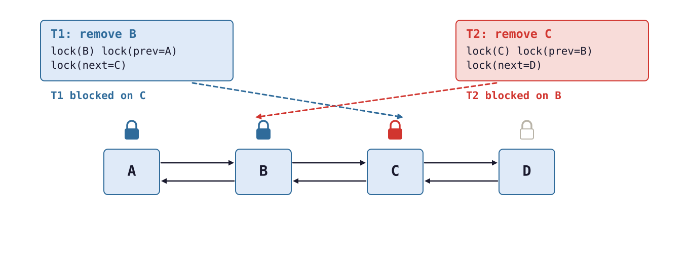</p> --- **observation** → the **<font color="darkred">order</font>** of lock acquisition **matters**! --- ### deadlock | **questions** 1. can we **understand** which orders are dangerous? --- ### deadlock | **questions** 1. can we **understand** which orders are dangerous? 2. can we **prevent** or **avoid** deadlocks? --- ## traffic and **resource contention** --- ### traffic | **resource contention** four one-way roads, traffic flowing <p>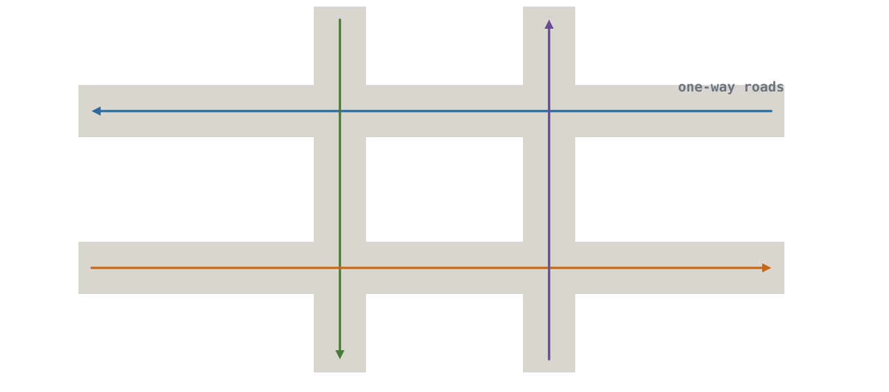</p> --- ### traffic | **resource contention** intersections → **contended resources** <p>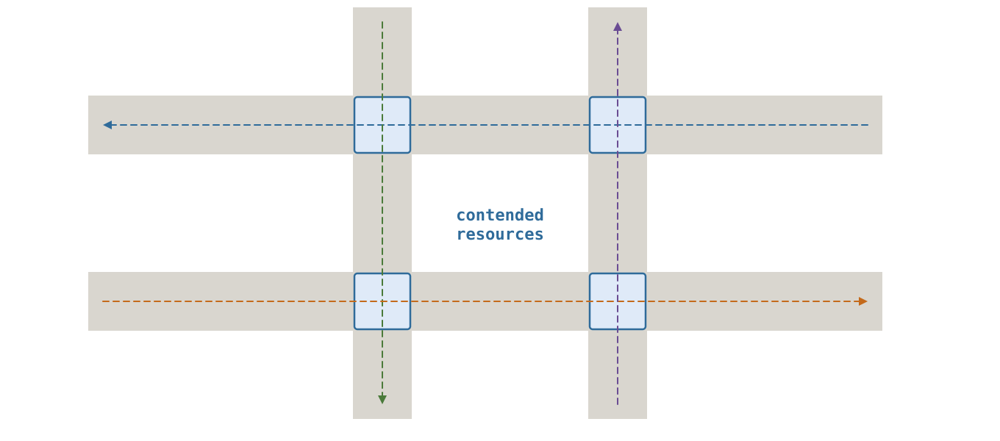</p> --- ### traffic | **resource contention** <scb>F1</scb> gets **both** top intersections → flows through <p>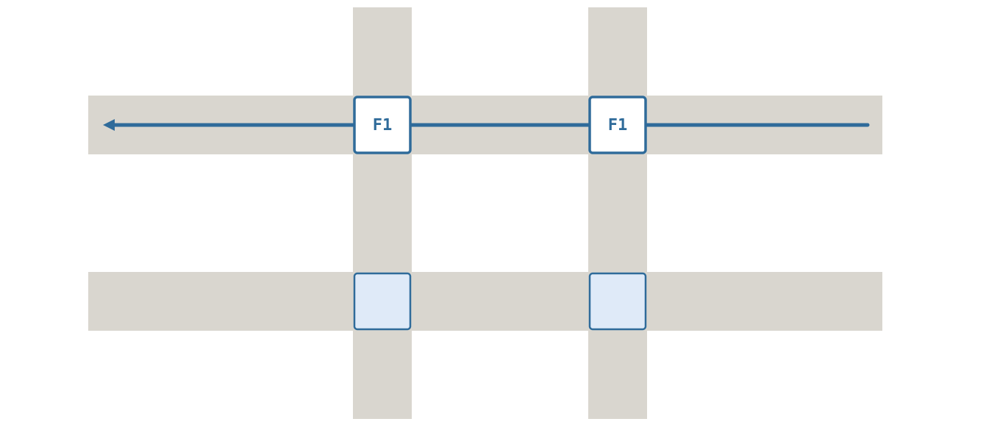</p> --- ### traffic | **resource contention** each flow holds **one** intersection, waits for the **next** <p>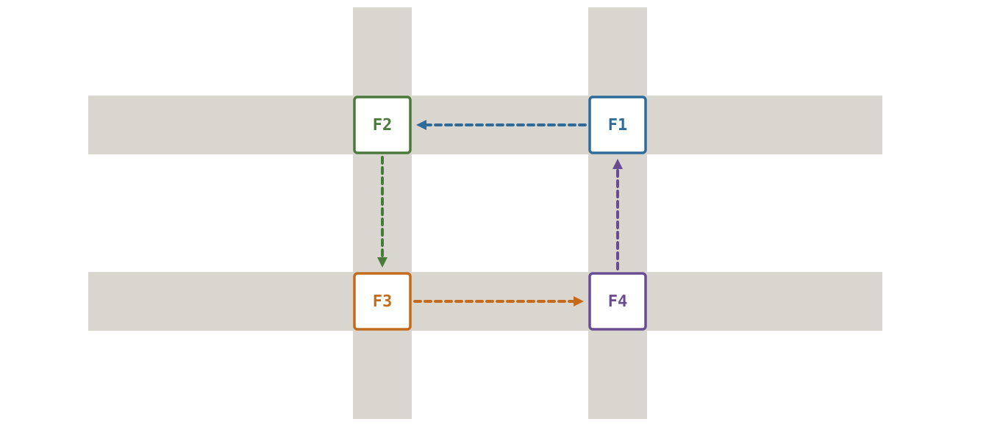</p> --- ### traffic | **resource contention** ## **gridlock!** --- ### traffic | **resource contention** - humans are **adaptive** → squeeze through, eventually --- ### traffic | **resource contention** - humans are **adaptive** → squeeze through, eventually - computers are **not** → we must design for it --- ## system **model** --- ### system model | | | examples | |---|---|---| | resource **types** | <scb>R1</scb>, <scb>R2</scb>, <scb>R3</scb>, … | CPU, devices, memory, data structures | --- ### system model | | | examples | |---|---|---| | resource **types** | <scb>R1</scb>, <scb>R2</scb>, <scb>R3</scb>, … | CPU, devices, memory, data structures | | **instances** | type <scb>Ri</scb> has <scb>Wi</scb> instances | bytes of memory, multiple CPUs, counting semaphore | || --- ### system model | **using a resource** | step | lock | memory | |---|---|---| | <scb>request()</scb> | <scb>lock()</scb> | <scb>malloc()</scb> | --- ### system model | **using a resource** | step | lock | memory | |---|---|---| | <scb>request()</scb> | <scb>lock()</scb> | <scb>malloc()</scb> | | <scb>use()</scb> | critical section | read/write it | --- ### system model | **using a resource** | step | lock | memory | |---|---|---| | <scb>request()</scb> | <scb>lock()</scb> | <scb>malloc()</scb> | | <scb>use()</scb> | critical section | read/write it | | <scb>release()</scb> | <scb>unlock()</scb> | <scb>free()</scb> | || --- ## deadlock | **four conditions** --- deadlock **<font color="darkred">can</font>** arise if **four** conditions hold **simultaneously** --- ### four conditions <div class="multicolumn" style="display: grid; grid-template-columns: 40% 60%; gap: 20px; align-items: center;"> <div> <p>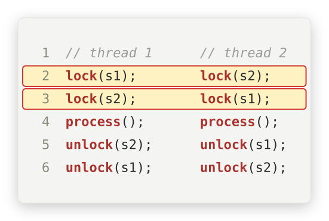</p> </div> <div> ||| | --- | --- | | 1. **mutual exclusion** | only **one** process at a time uses a resource | </div> </div> --- ### four conditions <div class="multicolumn" style="display: grid; grid-template-columns: 40% 60%; gap: 20px; align-items: center;"> <div> </div> <div> ||| | --- | --- | | 1. **mutual exclusion** | only **one** process at a time uses a resource | | 2. **hold and wait** | holding **one** resource, waiting for **another** | </div> </div> --- ### four conditions <div class="multicolumn" style="display: grid; grid-template-columns: 40% 60%; gap: 20px; align-items: center;"> <div> </div> <div> ||| | --- | --- | | 1. **mutual exclusion** | only **one** process at a time uses a resource | | 2. **hold and wait** | holding **one** resource, waiting for **another** | | 3. **no preemption** | released only **voluntarily**, after use | </div> </div> --- ### four conditions <div class="multicolumn" style="display: grid; grid-template-columns: 40% 60%; gap: 20px; align-items: center;"> <div> </div> <div> ||| | --- | --- | | 1. **mutual exclusion** | only **one** process at a time uses a resource | | 2. **hold and wait** | holding **one** resource, waiting for **another** | | 3. **no preemption** | released only **voluntarily**, after use | | 4. **circular wait** | <scb>P0</scb> waits for <scb>P1</scb>, <scb>P1</scb> for <scb>P2</scb>, …, <scb>Pn</scb> for <scb>P0</scb> | || </div> </div> --- ### four conditions all four hold → deadlock **guaranteed**? --- ### four conditions all four hold → deadlock **guaranteed**? <br> <br> ## **no!** - "**can**" → it depends on the **interleaving** - like race conditions → **rare**, hard to test and debug! --- ## resource allocation **graph** --- ### resource allocation graph - <scb>G = (V, E)</scb> --- ### resource allocation graph - <scb>G = (V, E)</scb> - two types of vertices - **processes** <scb>P = {P0, P1, …, Pn}</scb> - **resource types** <scb>R = {R1, R2, …, Rm}</scb> --- ### resource allocation graph | **edges** | edge | direction | means | |---|---|---| | **request** | <scb>Pi → Rj</scb> | <scb>Pi</scb> asked, is **waiting** <br> [<scb>lock()</scb>, <scb>malloc()</scb> called] | --- ### resource allocation graph | **edges** | edge | direction | means | |---|---|---| | **request** | <scb>Pi → Rj</scb> | <scb>Pi</scb> asked, is **waiting** <br> [<scb>lock()</scb>, <scb>malloc()</scb> called] | | **assignment** | <scb>Rj → Pi</scb> | <scb>Pi</scb> **holds** one instance <br> [<scb>lock()</scb>, <scb>malloc()</scb> returned] | || --- ### resource allocation graph | **notation** <p>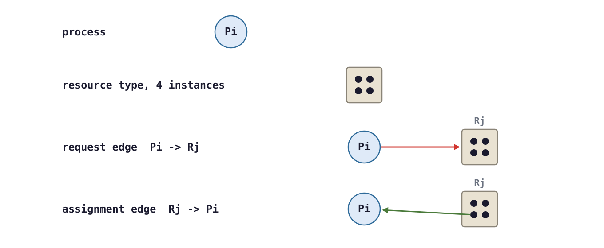</p> --- ### resource allocation graph | **traffic** the gridlock... as a graph <p>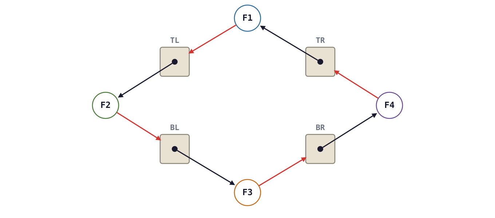</p> --- ### resource allocation graph | **traffic** the gridlock... as a graph <div class="multicolumn" style="display: grid; grid-template-columns: 40% 60%; gap: 20px; align-items: center;"> <div> </div> <div> - every flow **holds** one intersection - ...and **requests** the next - → a **cycle**! </div> </div> --- is there a deadlock? --- ### resource allocation graph | **example I** is there a deadlock? <p>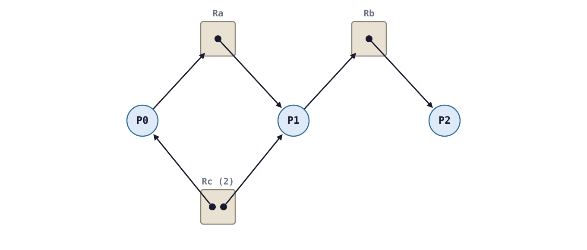</p> --- ### resource allocation graph | **example I** is there a deadlock? --- ### resource allocation graph | **example I** is there a deadlock? <br> <br> ## **no!** - <scb>P2</scb> isn't waiting → it can release <scb>Rb</scb> - then <scb>P1</scb> runs, releases... no cycle --- ### resource allocation graph | **example II** add **one** edge: <scb>P2</scb> requests <scb>Rc</scb> <p>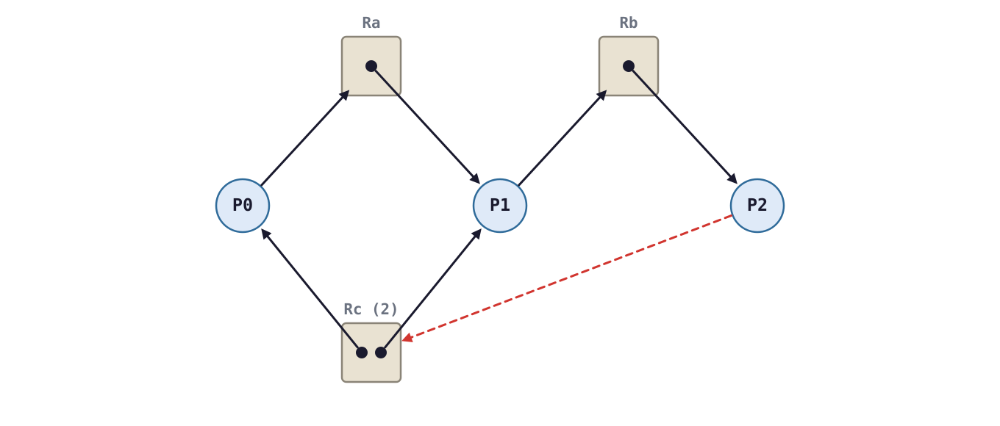</p> --- ### resource allocation graph | **example II** is there a deadlock? <p>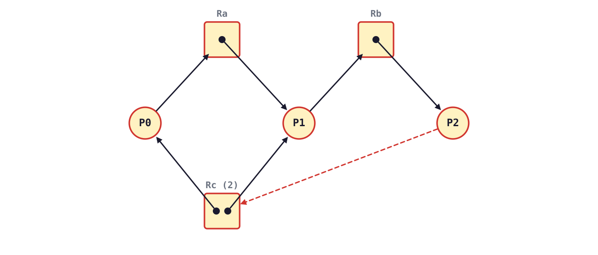</p> --- ### resource allocation graph | **example II** - ## **yes!** --- ### resource allocation graph | **example II** - ## **yes!** - <scb>P0</scb> → <scb>Ra</scb> → <scb>P1</scb> → <scb>Rb</scb> → <scb>P2</scb> → <scb>Rc</scb> → <scb>P0</scb>, <scb>P1</scb> --- ### resource allocation graph | **example II** - ## **yes!** - <scb>P0</scb> → <scb>Ra</scb> → <scb>P1</scb> → <scb>Rb</scb> → <scb>P2</scb> → <scb>Rc</scb> → <scb>P0</scb>, <scb>P1</scb> - both <scb>Rc</scb> instances held by **waiting** processes --- ### resource allocation graph | **example III** is there a deadlock? <p>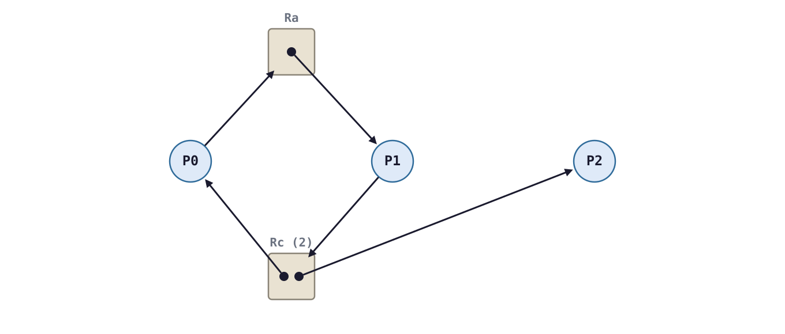</p> --- ### resource allocation graph | **example III** a cycle: <scb>P0</scb> → <scb>Ra</scb> → <scb>P1</scb> → <scb>Rc</scb> → <scb>P0</scb>... <p>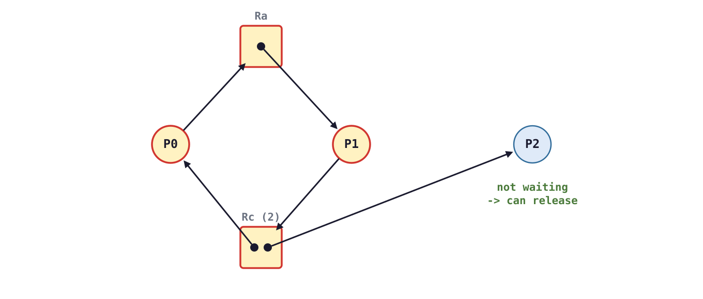</p> --- ### resource allocation graph | **example III** - ## **no!** --- ### resource allocation graph | **example III** - ## **no!** - <scb>P2</scb> holds the **other** <scb>Rc</scb> instance, isn't waiting --- ### resource allocation graph | **example III** - ## **no!** - <scb>P2</scb> holds the **other** <scb>Rc</scb> instance, isn't waiting - <scb>P2</scb> releases → <scb>P1</scb> gets <scb>Rc</scb> → ... → <scb>P0</scb> --- ### resource allocation graph | **rules** | graph | deadlock? | |---|---| | **no** cycle | **no** deadlock | --- ### resource allocation graph | **rules** | graph | deadlock? | |---|---| | **no** cycle | **no** deadlock | | cycle, **one** instance per type | **deadlock**! | --- ### resource allocation graph | **rules** | graph | deadlock? | |---|---| | **no** cycle | **no** deadlock | | cycle, **one** instance per type | **deadlock**! | | cycle, **several** instances per type | **possible**, not certain | || --- ## handling **deadlocks** --- ### handling deadlocks | approach | when | how | |---|---|---| | **prevention** | design time | make one of the **4 conditions** impossible | --- ### handling deadlocks | approach | when | how | |---|---|---| | **prevention** | design time | make one of the **4 conditions** impossible | | **avoidance** | run time | refuse **unsafe** allocations | --- ### handling deadlocks | approach | when | how | |---|---|---| | **prevention** | design time | make one of the **4 conditions** impossible | | **avoidance** | run time | refuse **unsafe** allocations | | **detection + recovery** | after the fact | find cycles, **kill** someone | --- ### handling deadlocks | approach | when | how | |---|---|---| | **prevention** | design time | make one of the **4 conditions** impossible | | **avoidance** | run time | refuse **unsafe** allocations | | **detection + recovery** | after the fact | find cycles, **kill** someone | | **ignorance** | never | luck... and crossed fingers | || [most systems → ad hoc **prevention** + ignorance!] --- _e.g.,_ Windows 95/98 → frequent lock-ups... many were deadlocks --- ## deadlock | **prevention** --- prevent **any one** of the four conditions! --- ### prevention | **per condition** | condition | prevent it? | |---|---| | **mutual exclusion** | can't compromise → some resources **need** it | --- ### prevention | **per condition** | condition | prevent it? | |---|---| | **mutual exclusion** | can't compromise → some resources **need** it | | **hold and wait** | request **all** resources at once <br> [taking all, or none] | --- ### prevention | **per condition** | condition | prevent it? | |---|---| | **mutual exclusion** | can't compromise → some resources **need** it | | **hold and wait** | request **all** resources at once <br> [taking all, or none] | | **no preemption** | can't get the next one? → **release** all, retry | --- ### prevention | **per condition** | condition | prevent it? | |---|---| | **mutual exclusion** | can't compromise → some resources **need** it | | **hold and wait** | request **all** resources at once <br> [taking all, or none] | | **no preemption** | can't get the next one? → **release** all, retry | | **circular wait** | impose a **total order** on resources | || --- ### prevention | **hold and wait** - "take everything at once" → one **coarse** lock --- ### prevention | **hold and wait** - "take everything at once" → one **coarse** lock - but... - **low** resource utilization - **starvation** possible - applies to memory too → allocate **all** of it up front! --- ### prevention | **no preemption** - take locks one by one with **try-lock** --- ### prevention | **no preemption** - take locks one by one with **try-lock** - busy? → **release** everything, try again --- ### prevention | **no preemption** - take locks one by one with **try-lock** - busy? → **release** everything, try again - [similar idea → **optimistic concurrency** in databases] --- let's look at a `code` example using <scb>pthread_mutex_trylock</scb> --- ```C #include <pthread.h> #include <stdio.h> #include <unistd.h> pthread_mutex_t s1 = PTHREAD_MUTEX_INITIALIZER; pthread_mutex_t s2 = PTHREAD_MUTEX_INITIALIZER; int retries[2]; /* take `first` then `second`; if `second` is busy, release `first` and retry */ void lock_both(pthread_mutex_t *first, pthread_mutex_t *second, int id) { while (1) { pthread_mutex_lock(first); usleep(1000); // same window as deadlock_demo.c if (pthread_mutex_trylock(second) == 0) return; // got both! pthread_mutex_unlock(first); // "preempt" ourselves retries[id]++; usleep(100); // back off, try again } } void *thread1(void *arg) { lock_both(&s1, &s2, 0); usleep(1000); printf("thread 1: processing\n"); pthread_mutex_unlock(&s2); pthread_mutex_unlock(&s1); return NULL; } void *thread2(void *arg) { lock_both(&s2, &s1, 1); // opposite order... but no deadlock usleep(1000); printf("thread 2: processing\n"); pthread_mutex_unlock(&s1); pthread_mutex_unlock(&s2); return NULL; } int main(void) { pthread_t t1, t2; pthread_create(&t1, NULL, thread1, NULL); pthread_create(&t2, NULL, thread2, NULL); pthread_join(t1, NULL); pthread_join(t2, NULL); printf("done (retries: %d, %d)\n", retries[0], retries[1]); return 0; } ``` --- ```C [10|12|13|14-15|16-18|23|32] #include <pthread.h> #include <stdio.h> #include <unistd.h> pthread_mutex_t s1 = PTHREAD_MUTEX_INITIALIZER; pthread_mutex_t s2 = PTHREAD_MUTEX_INITIALIZER; int retries[2]; /* take `first` then `second`; if `second` is busy, release `first` and retry */ void lock_both(pthread_mutex_t *first, pthread_mutex_t *second, int id) { while (1) { pthread_mutex_lock(first); usleep(1000); // same window as deadlock_demo.c if (pthread_mutex_trylock(second) == 0) return; // got both! pthread_mutex_unlock(first); // "preempt" ourselves retries[id]++; usleep(100); // back off, try again } } void *thread1(void *arg) { lock_both(&s1, &s2, 0); usleep(1000); printf("thread 1: processing\n"); pthread_mutex_unlock(&s2); pthread_mutex_unlock(&s1); return NULL; } void *thread2(void *arg) { lock_both(&s2, &s1, 1); // opposite order... but no deadlock usleep(1000); printf("thread 2: processing\n"); pthread_mutex_unlock(&s1); pthread_mutex_unlock(&s2); return NULL; } int main(void) { pthread_t t1, t2; pthread_create(&t1, NULL, thread1, NULL); pthread_create(&t2, NULL, thread2, NULL); pthread_join(t1, NULL); pthread_join(t2, NULL); printf("done (retries: %d, %d)\n", retries[0], retries[1]); return 0; } ``` --- ```C #include <pthread.h> #include <stdio.h> #include <unistd.h> pthread_mutex_t s1 = PTHREAD_MUTEX_INITIALIZER; pthread_mutex_t s2 = PTHREAD_MUTEX_INITIALIZER; int retries[2]; /* take `first` then `second`; if `second` is busy, release `first` and retry */ void lock_both(pthread_mutex_t *first, pthread_mutex_t *second, int id) { while (1) { pthread_mutex_lock(first); usleep(1000); // same window as deadlock_demo.c if (pthread_mutex_trylock(second) == 0) return; // got both! pthread_mutex_unlock(first); // "preempt" ourselves retries[id]++; usleep(100); // back off, try again } } void *thread1(void *arg) { lock_both(&s1, &s2, 0); usleep(1000); printf("thread 1: processing\n"); pthread_mutex_unlock(&s2); pthread_mutex_unlock(&s1); return NULL; } void *thread2(void *arg) { lock_both(&s2, &s1, 1); // opposite order... but no deadlock usleep(1000); printf("thread 2: processing\n"); pthread_mutex_unlock(&s1); pthread_mutex_unlock(&s2); return NULL; } int main(void) { pthread_t t1, t2; pthread_create(&t1, NULL, thread1, NULL); pthread_create(&t2, NULL, thread2, NULL); pthread_join(t1, NULL); pthread_join(t2, NULL); printf("done (retries: %d, %d)\n", retries[0], retries[1]); return 0; } ``` --- ### prevention | **try-lock** ``` $ ./trylock_backoff thread 1: processing thread 2: processing done (retries: 1, 0) ``` opposite lock orders... **no** deadlock → thread 1 backed off once Note: - actual runs: 4 of 4 finished with retries (1, 0). see pthread_mutex_trylock(3p). --- ### prevention | **try-lock** [see [pthread_mutex_trylock(3p)](https://man7.org/linux/man-pages/man3/pthread_mutex_trylock.3p.html)] --- ## prevention | **lock ordering** --- - **total order** on resources → always take locks in the **same** order --- - **total order** on resources → always take locks in the **same** order - the **most common** prevention technique! --- ### lock ordering | **fixed** ```C #include <pthread.h> #include <stdio.h> #include <unistd.h> pthread_mutex_t s1 = PTHREAD_MUTEX_INITIALIZER; // "red" lock pthread_mutex_t s2 = PTHREAD_MUTEX_INITIALIZER; // "blue" lock void *thread1(void *arg) { pthread_mutex_lock(&s1); usleep(1000); // widen the window: let thread 2 run pthread_mutex_lock(&s2); // waits for thread 2... printf("thread 1: processing\n"); pthread_mutex_unlock(&s2); pthread_mutex_unlock(&s1); return NULL; } void *thread2(void *arg) { pthread_mutex_lock(&s1); // same order as thread 1 usleep(1000); pthread_mutex_lock(&s2); printf("thread 2: processing\n"); pthread_mutex_unlock(&s2); pthread_mutex_unlock(&s1); return NULL; } int main(void) { pthread_t t1, t2; pthread_create(&t1, NULL, thread1, NULL); pthread_create(&t2, NULL, thread2, NULL); pthread_join(t1, NULL); pthread_join(t2, NULL); printf("done\n"); return 0; } ``` --- ### lock ordering | **fixed** ```C [8-11|18-19|22] #include <pthread.h> #include <stdio.h> #include <unistd.h> pthread_mutex_t s1 = PTHREAD_MUTEX_INITIALIZER; // "red" lock pthread_mutex_t s2 = PTHREAD_MUTEX_INITIALIZER; // "blue" lock void *thread1(void *arg) { pthread_mutex_lock(&s1); usleep(1000); // widen the window: let thread 2 run pthread_mutex_lock(&s2); // waits for thread 2... printf("thread 1: processing\n"); pthread_mutex_unlock(&s2); pthread_mutex_unlock(&s1); return NULL; } void *thread2(void *arg) { pthread_mutex_lock(&s1); // same order as thread 1 usleep(1000); pthread_mutex_lock(&s2); printf("thread 2: processing\n"); pthread_mutex_unlock(&s2); pthread_mutex_unlock(&s1); return NULL; } int main(void) { pthread_t t1, t2; pthread_create(&t1, NULL, thread1, NULL); pthread_create(&t2, NULL, thread2, NULL); pthread_join(t1, NULL); pthread_join(t2, NULL); printf("done\n"); return 0; } ``` --- ### lock ordering | **fixed** ```C #include <pthread.h> #include <stdio.h> #include <unistd.h> pthread_mutex_t s1 = PTHREAD_MUTEX_INITIALIZER; // "red" lock pthread_mutex_t s2 = PTHREAD_MUTEX_INITIALIZER; // "blue" lock void *thread1(void *arg) { pthread_mutex_lock(&s1); usleep(1000); // widen the window: let thread 2 run pthread_mutex_lock(&s2); // waits for thread 2... printf("thread 1: processing\n"); pthread_mutex_unlock(&s2); pthread_mutex_unlock(&s1); return NULL; } void *thread2(void *arg) { pthread_mutex_lock(&s1); // same order as thread 1 usleep(1000); pthread_mutex_lock(&s2); printf("thread 2: processing\n"); pthread_mutex_unlock(&s2); pthread_mutex_unlock(&s1); return NULL; } int main(void) { pthread_t t1, t2; pthread_create(&t1, NULL, thread1, NULL); pthread_create(&t2, NULL, thread2, NULL); pthread_join(t1, NULL); pthread_join(t2, NULL); printf("done\n"); return 0; } ``` --- ### lock ordering | **runs** | program | 3 runs | |---|---| | <scb>deadlock_demo</scb> | hung **3**/**3** → exit <scb>124</scb> | --- ### lock ordering | **runs** | program | 3 runs | |---|---| | <scb>deadlock_demo</scb> | hung **3**/**3** → exit <scb>124</scb> | | <scb>lock_order_fixed</scb> | finished **3**/**3** → <scb>done</scb> | || --- doubly linked list? → **hand-over-hand** locking enforces an order! --- let's look at <scb>xv6</scb>... path lookup [<scb>fs.c</scb>] --- ### <scb>xv6</scb> | <scb>namex()</scb> ```C while((path = skipelem(path, name)) != 0){ ilock(ip); if(ip->type != T_DIR){ iunlockput(ip); return 0; } ... if((next = dirlookup(ip, name, 0)) == 0){ iunlockput(ip); return 0; } iunlockput(ip); ip = next; } ``` --- ### <scb>xv6</scb> | <scb>namex()</scb> ```C [2|3-6|8-11|12|13] while((path = skipelem(path, name)) != 0){ ilock(ip); if(ip->type != T_DIR){ iunlockput(ip); return 0; } ... if((next = dirlookup(ip, name, 0)) == 0){ iunlockput(ip); return 0; } iunlockput(ip); ip = next; } ``` --- ### <scb>xv6</scb> | <scb>namex()</scb> ```C while((path = skipelem(path, name)) != 0){ ilock(ip); if(ip->type != T_DIR){ iunlockput(ip); return 0; } ... if((next = dirlookup(ip, name, 0)) == 0){ iunlockput(ip); return 0; } iunlockput(ip); ip = next; } ``` --- ### <scb>xv6</scb> | <scb>namex()</scb> - lock directory <scb>ip</scb>, look up <scb>next</scb> --- ### <scb>xv6</scb> | <scb>namex()</scb> - lock directory <scb>ip</scb>, look up <scb>next</scb> - **unlock** <scb>ip</scb> **before** locking <scb>next</scb> --- ### <scb>xv6</scb> | <scb>namex()</scb> - lock directory <scb>ip</scb>, look up <scb>next</scb> - **unlock** <scb>ip</scb> **before** locking <scb>next</scb> - never hold **two** inode locks → no lock-order cycle <br> [<scb>".."</scb> would lock **upward**!] Note: - fs.c: "The separation also helps avoid deadlock and races during pathname lookup." --- can a thread deadlock **with itself**? --- ### deadlock | **with yourself** can a thread deadlock **with itself**? <div class="multicolumn" style="display: grid; grid-template-columns: 40% 60%; gap: 20px; align-items: center;"> <div> <p>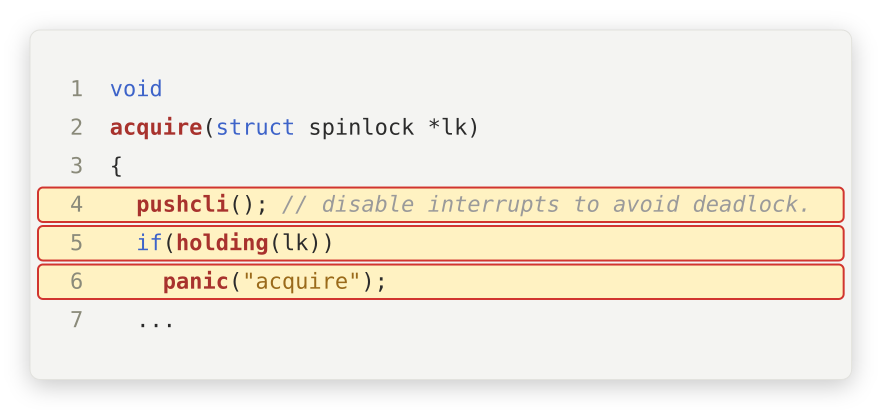</p> </div> <div> ||| | --- | --- | | holding a spinlock | interrupt arrives | | ISR wants **same** lock | spins **forever** on this core! | | xv6 fix | <scb>pushcli()</scb> → no interrupts while holding | | take it **twice**? | <scb>panic("acquire")</scb> | || </div> </div> --- ### deadlock | **with yourself** [<scb>spinlock.c</scb>] → we saw <scb>pushcli()</scb> last lecture... **this** is why! --- ## deadlock | **avoidance** --- ### avoidance - **dynamically** check each allocation → is it **safe**? --- ### avoidance - **dynamically** check each allocation → is it **safe**? - processes declare **maximum** resource needs **a priori** --- ### avoidance - **dynamically** check each allocation → is it **safe**? - processes declare **maximum** resource needs **a priori** - refuse allocations that **could** lead to circular wait --- ### avoidance | **single instance** <scb>F1</scb> asks for <scb>TR</scb>... <p>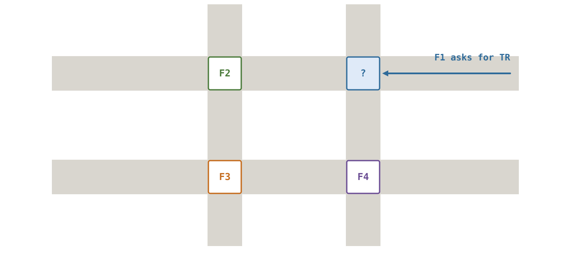</p> --- ### avoidance | **single instance** granting it could close the cycle → **deny** (for now) <p>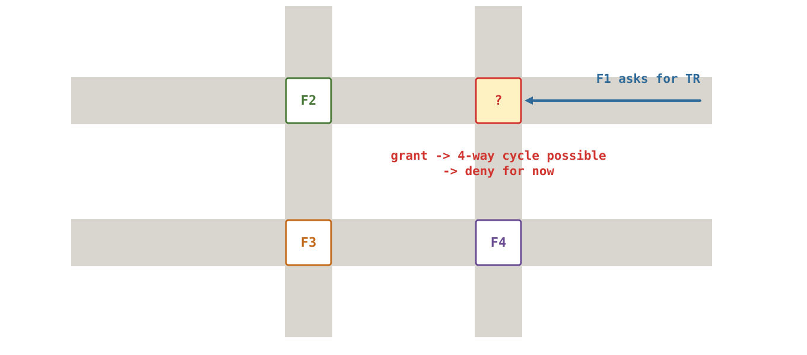</p> --- ### avoidance | **algorithms** | resources | algorithm | |---|---| | **single** instance each | avoid **cycles** in the resource allocation graph | --- ### avoidance | **algorithms** | resources | algorithm | |---|---| | **single** instance each | avoid **cycles** in the resource allocation graph | | **multiple** instances | Dijkstra's [**Banker's algorithm**](https://en.wikipedia.org/wiki/Banker%27s_algorithm) | || [must know **maximum** needs up front → rarely practical] --- ## deadlock | **detection** --- ### detection - **periodically** check: is the system deadlocked? --- ### detection - **periodically** check: is the system deadlocked? - uses **current** allocations only → **practical** --- ### detection - **periodically** check: is the system deadlocked? - uses **current** allocations only → **practical** - single-instance resources → look for a **cycle** --- ### detection | **waits-for graph** resource allocation graph... <p>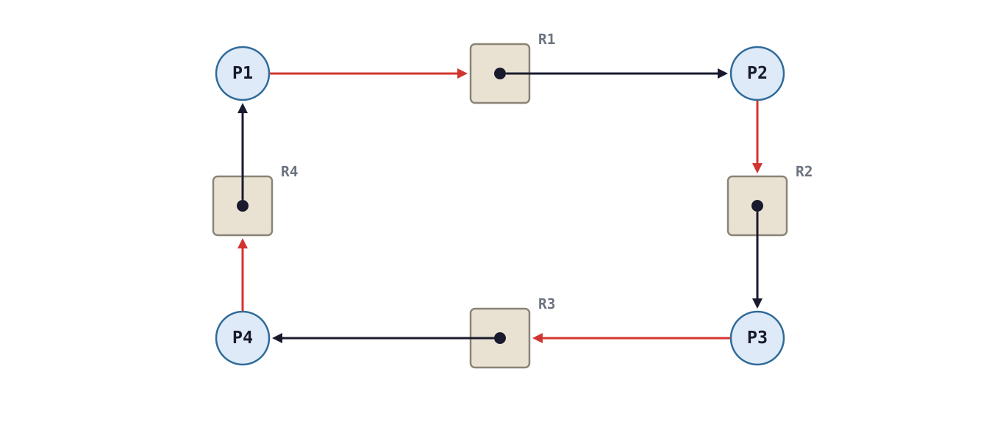</p> --- ### detection | **waits-for graph** ...collapse resources → **waits-for** graph <p>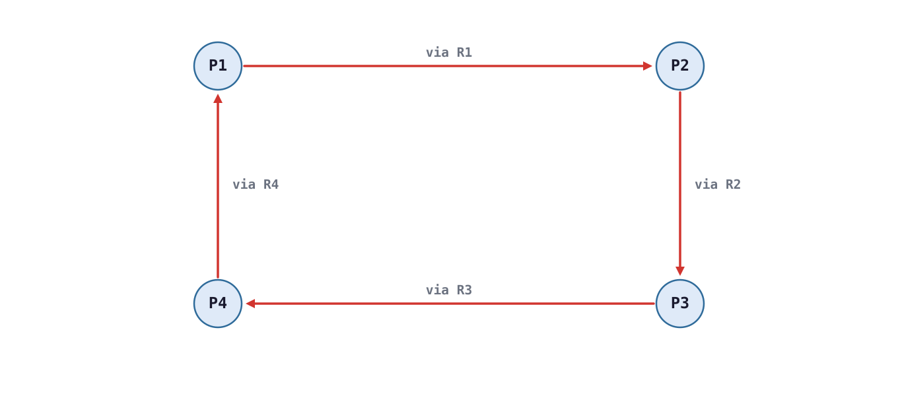</p> --- ### detection | **waits-for graph** - <scb>Pi → Pj</scb> → <scb>Pi</scb> waits for a resource <scb>Pj</scb> holds --- ### detection | **waits-for graph** - <scb>Pi → Pj</scb> → <scb>Pi</scb> waits for a resource <scb>Pj</scb> holds - deadlock ↔ a **cycle** --- ### detection | **waits-for graph** - <scb>Pi → Pj</scb> → <scb>Pi</scb> waits for a resource <scb>Pj</scb> holds - deadlock ↔ a **cycle** - cycle detection → a classic **interview** question! --- ## deadlock | **recovery** --- ### recovery - add preemption → **terminate** processes - abort **all** deadlocked processes - ...or abort **one at a time** until resolved --- in which **order**? --- ### recovery | **OOM killer** - Linux **out-of-memory** killer → memory "deadlock" recovery --- ### recovery | **OOM killer** - Linux **out-of-memory** killer → memory "deadlock" recovery - everyone blocked in <scb>malloc()</scb>... who dies? --- ### recovery | **OOM killer** - Linux **out-of-memory** killer → memory "deadlock" recovery - everyone blocked in <scb>malloc()</scb>... who dies? - biggest process? → maybe the **most important** one (_e.g._ X server)! --- ### recovery | **OOM killer** - Linux **out-of-memory** killer → memory "deadlock" recovery - everyone blocked in <scb>malloc()</scb>... who dies? - biggest process? → maybe the **most important** one (_e.g._ X server)! - **heuristics** → no perfect answer --- ### recovery | **kernel deadlocks** deadlock **in the kernel**? <br> <br> usually → **reboot**! --- ## deadlock | **summary** --- ||| | --- | --- | | cause | **dynamic** resource allocation <br> [locks are resources too!] | --- ||| | --- | --- | | cause | **dynamic** resource allocation <br> [locks are resources too!] | | four conditions | mutual exclusion, hold and wait, <br> no preemption, circular wait | --- ||| | --- | --- | | cause | **dynamic** resource allocation <br> [locks are resources too!] | | four conditions | mutual exclusion, hold and wait, <br> no preemption, circular wait | | main defense | a **total lock order** <br> [per data structure, across data structures] | --- ||| | --- | --- | | cause | **dynamic** resource allocation <br> [locks are resources too!] | | four conditions | mutual exclusion, hold and wait, <br> no preemption, circular wait | | main defense | a **total lock order** <br> [per data structure, across data structures] | | also | memory → OOM killer | || --- **next topic** → scheduling